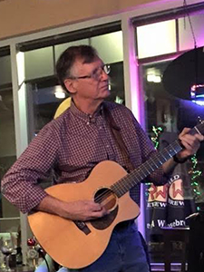
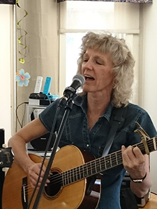
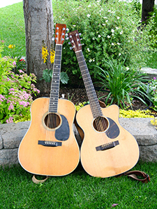

Six
by
Six


|  |
Brian HoweBrian Howe grew up in Saint John, NB. He’s been a miner, a bar musician, an oil worker, computer trainer, and most recently, a musician once again. He’s lived in Lynn Lake and Churchill, MB, Saint John, NB, Fort McMurray and now Calgary. Original Songs |
|
|  |
Carol BloorCarol Bloor grew up in Saint John, NB, and Kingston, ON, playing classical guitar before coming to Calgary in 1979. Music went on hold to pursue a career. She’s been a geologist, an engineer, a banker, a dealmaker and now, once again, a musician. Original Songs
|
|
|  |
About the BandNamed for the duo's six string guitars, Six by Six plays acoustic folk and bluegrass music from the 1960s forward. Their fingerstyle, flatpicking and songwriting weave together like a basket, filled with stories for the heart. Six by Six love small venues - coffee houses, folk festivals, seniors' residences, house parties - where they can really connect with the audience. The pair met in 2015 and instantly admired each other’s music skills: Carol with her precise fingerpicking and metronome timing, and Brian with his ability to improvise fingerpicking and play sweet notes. Together, they create a unique style. |